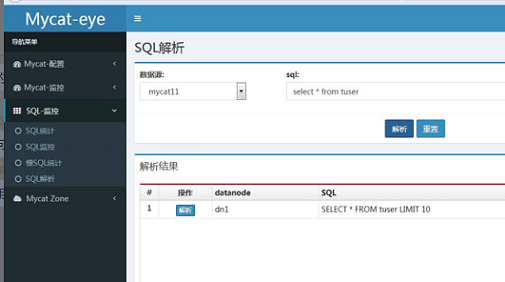
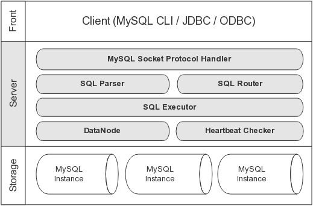
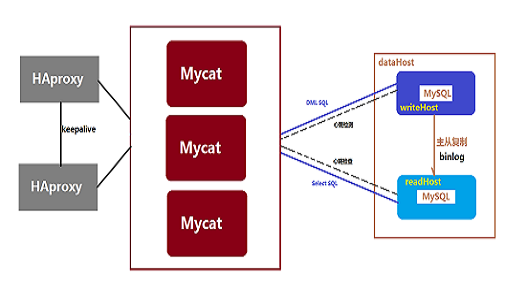
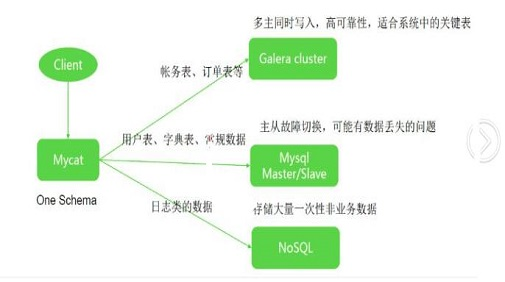
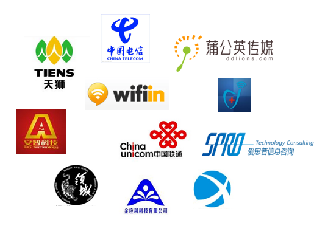

Mycat关键特性
关键特性
支持SQL92标准
支持MySQL、Oracle、DB2、SQL Server、PostgreSQL等DB的常见SQL语法
遵守Mysql原生协议，跨语言，跨平台，跨数据库的通用中间件代理。
基于心跳的自动故障切换，支持读写分离，支持MySQL主从，以及galera cluster集群。
支持Galera for MySQL集群，Percona Cluster或者MariaDB cluster
基于Nio实现，有效管理线程，解决高并发问题。
支持数据的多片自动路由与聚合，支持sum,count,max等常用的聚合函数,支持跨库分页。
支持单库内部任意join，支持跨库2表join，甚至基于caltlet的多表join。
支持通过全局表，ER关系的分片策略，实现了高效的多表join查询。
支持多租户方案。
支持分布式事务（弱xa）。
支持XA分布式事务（1.6.5）。
支持全局序列号，解决分布式下的主键生成问题。
分片规则丰富，插件化开发，易于扩展。
强大的web，命令行监控。
支持前端作为MySQL通用代理，后端JDBC方式支持Oracle、DB2、SQL Server 、 mongodb 、巨杉。
支持密码加密
支持服务降级
支持IP白名单
支持SQL黑名单、sql注入攻击拦截
支持prepare预编译指令（1.6）
支持非堆内存(Direct Memory)聚合计算（1.6）
支持PostgreSQL的native协议（1.6）
支持mysql和oracle存储过程，out参数、多结果集返回（1.6）
支持zookeeper协调主从切换、zk序列、配置zk化（1.6）
支持库内分表（1.6）
集群基于ZooKeeper管理，在线升级，扩容，智能优化，大数据处理（2.0开发版）。
什么是MYCAT
一个彻底开源的，面向企业应用开发的大数据库集群
支持事务、ACID、可以替代MySQL的加强版数据库
一个可以视为MySQL集群的企业级数据库，用来替代昂贵的Oracle集群
一个融合内存缓存技术、NoSQL技术、HDFS大数据的新型SQL Server
结合传统数据库和新型分布式数据仓库的新一代企业级数据库产品
一个新颖的数据库中间件产品
MYCAT监控
支持对Mycat、Mysql性能监控
支持对Mycat的JVM内存提供监控服务
支持对线程的监控
支持对操作系统的CPU、内存、磁盘、网络的监控

目标
低成本的将现有的单机数据库和应用平滑迁移到“云”端，解决数据存储和业务规模迅速增长情况下的数据瓶颈问题。
1.5版本架构

MYCAT官方论坛地址已更新为：i.mycat.io 欢迎大家访问！MYCAT社区所打造的IT新生活！
长期规划2.0
完全实现分布式事务，完全的支持分布式。
通过Mycat web（eye）完成可视化配置，及智能监控，自动运维。
通过mysql 本地节点，完整的解决数据扩容难度，实现自动扩容机制，解决扩容难点。
支持基于zookeeper的主从切换及Mycat集群化管理。
通过Mycat Balance 替代第三方的Haproxy，LVS等第三方高可用，完整的兼容Mycat集群节点的动态上下线。
接入Spark等第三方工具，解决数据分析及大数据聚合的业务场景。
通过Mycat智能优化，分析分片热点，提供合理的分片建议，索引建议，及数据切分实时业务建议。
优势
基于阿里开源的Cobar产品而研发，Cobar的稳定性、可靠性、优秀的架构和性能以及众多成熟的使用案例使得MYCAT一开始就拥有一个很好的起点，站在巨人的肩膀上，我们能看到更远。业界优秀的开源项目和创新思路被广泛融入到MYCAT的基因中，使得MYCAT在很多方面都领先于目前其他一些同类的开源项目，甚至超越某些商业产品。
MYCAT背后有一支强大的技术团队，其参与者都是5年以上资深软件工程师、架构师、DBA等，优秀的技术团队保证了MYCAT的产品质量。
MYCAT并不依托于任何一个商业公司，因此不像某些开源项目，将一些重要的特性封闭在其商业产品中，使得开源项目成了一个摆设。
MYCAT架构

企业技术支持服务
随着中国电子商务等互联网业务的不断增长，企业对于数据库集群的需求越来越多，这为MYCAT的发展带来了机遇，同时也带来了很多挑战。由于MYCAT开源社区的开放性，目前已经吸引了来自全国各地2000多名开发志愿者，并在Github上贡献各种开发说明文档上百篇，均可免费下载。另外为了帮助使用者更好更快的掌握MYCAT使用技巧和方法，开源社区特别撰写了
《MYCAT权威指南》。虽然MYCAT在很大程度上简化了数据库分片集群的开发与部署难度，但考虑到仍然存在一些特殊情况，比如项目工期紧，企业缺乏足够的时间和人力来全面研究MyCAT，因此为了更好的支持各类企业使用MYCAT实施项目，加速项目开发进度，如今MYCAT开源社区整合了一支强大的技术团队，以每月5000元的赞助合作费用，向社会提供公益性的技术支持服务，以此加速MYCAT开源项目的发展，并且成为Apache第一个来自中国的顶级开源项目。
Mycat赞助商合同
联系MYCAT官方合作请发邮件到：market@mycat.io
Mycat高可用方案


MYCAT典型案例
